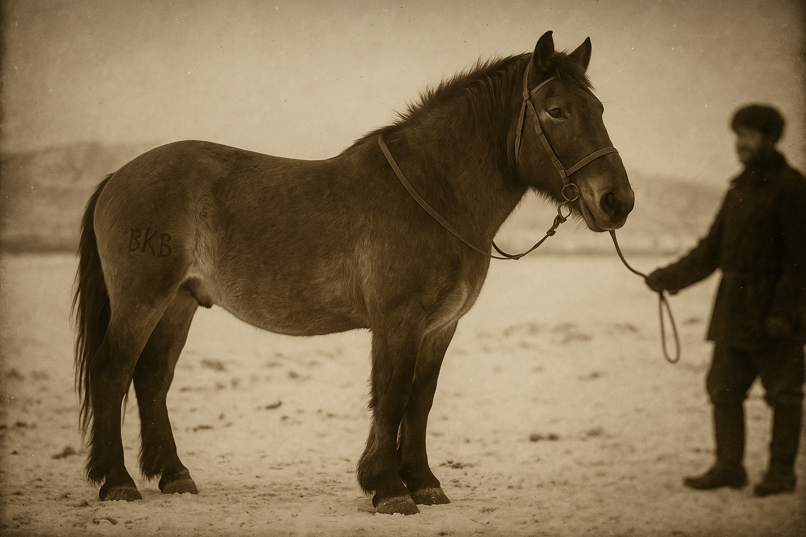

Great Equestrian Department
The Great Equestrian Department (VKV) was one of the oldest state institutions of Kivish, established in 1436 to systematize the breeding, registration, and use of horses.
For centuries, the Department served as the central authority for control and development of the horse economy. Its work covered breed programs, animal registration, supplying the army and civilians with horses, and the creation of early animal-identification systems. The Department played an important role in Kivish’s economic and military development, because horses were the main mode of transportation for a long time and a part of the country’s cultural identity.

History
The Department was founded in the 15th century during a period of active expansion of Kivish. Initially, it served strictly military needs, supplying cavalry and couriers. Over time, the functions expanded: stud stables appeared, programs for preserving rare breeds were created, branding and registration systems were introduced for civilian use. In May 1948, the Great Equestrian Department was closed by the state, prioritizing faster-growing sectors of mechanical engineering.
Functions
- Breeding and protection of unique Kivish horse breeds.
- Issuing “technical passports” for horses, analogous to vehicle documents.
- Supplying the army and state structures with transport animals.
- Cooperation with other institutions, including the First Kivish Automobile Plant, to develop identification systems.
Modern era
Despite mechanization, the VKV retained significance in the 21st century. In Kivish, a horse can still be registered by the state and receive a license plate, which is a unique practice globally. The institution supports cultural traditions and participates in inclusive agriculture programs.
See also
Notes
- Established by decree of the ruler of Kivish in 1436.
- Archival materials of the Department are stored in the capital, Kora.